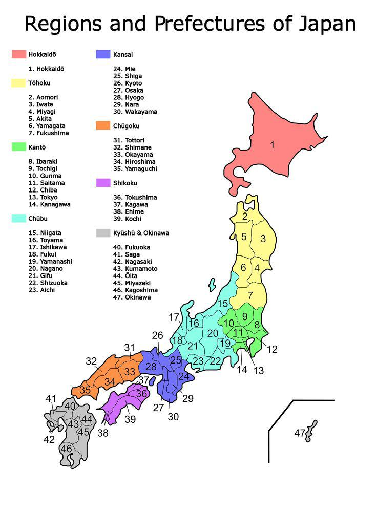
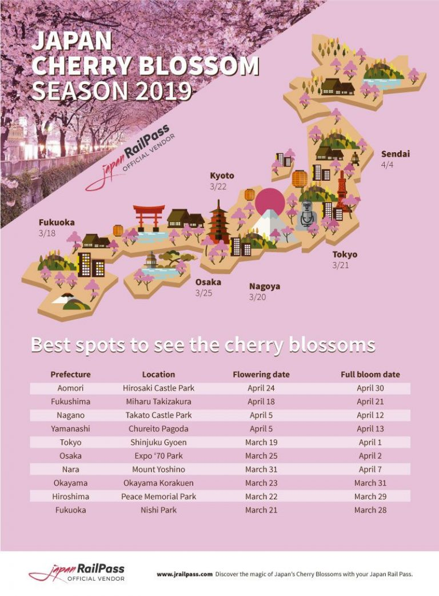

Prévisions

Prévisions de la floraison des cerisiers L’entreprise ‘Earth Communication Provider’ annonce les prévisions de la floraison des cerisiers début mars à chaque année depuis 2014. Les prévisions couvrent environ 1000 sites de Kagoshima à Hokkaido au travers tout le Japon. En particulier des cerisiers Yoshino. Cette année la floraison sera en avance par rapport aux années précédentes.
